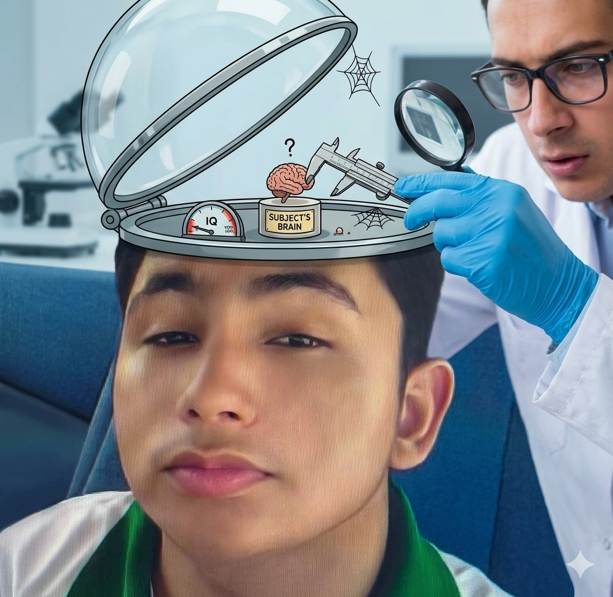

Quem Sou Eu

Sou Alessandro Sousa, estudante do IFRN e Técnico em Informática estou aprendendo programação pelo GtiHub através da disciplina de Autoria Web.
Sou Alessandro Sousa, estudante do IFRN e Técnico em Informática estou aprendendo programação pelo GtiHub através da disciplina de Autoria Web.
Atualmente estou aprendendo o conteúdo básico da programação no IFRN. Estou estudando Github e Phyton pelo Campus Macau com os professores Guilherme Leal e Jéssica Janine

Eu estudo no Campus há 3 meses e eu estou gostando muito de comparecer nas aulas pela socialização com os colegas e pelas boa notas, 48, 35, entre outras notas, isso me satifaz bastante e agradeço demais por esses momentos.
Meu objetivo é me tornar um garoto de programa qualificado, construindo projetos criativos e funcionais.